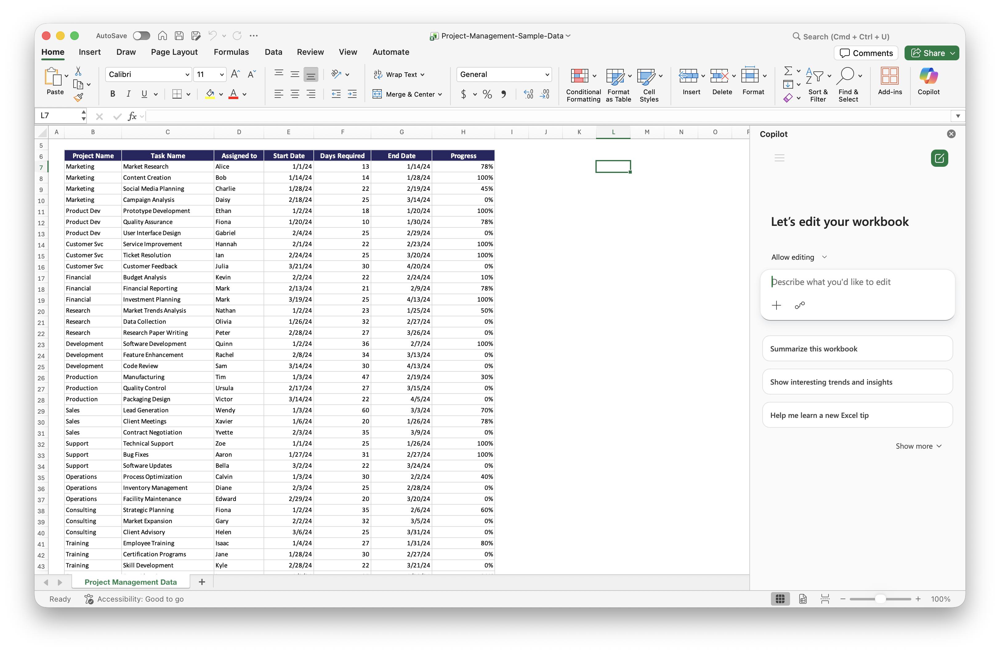

Module 4: Copilot for Excel
Module 4 explains how Copilot in Excel can help summarize, analyze, calculate, and visualize spreadsheet data using natural-language prompts. Click below to launch the learning module.
Launch Module
Module 4 explains how Copilot in Excel can help summarize, analyze, calculate, and visualize spreadsheet data using natural-language prompts. Click below to launch the learning module.
Launch ModuleDownload Copilot_Excel_Sample file and use Copilot to do analysis.
What to Do: